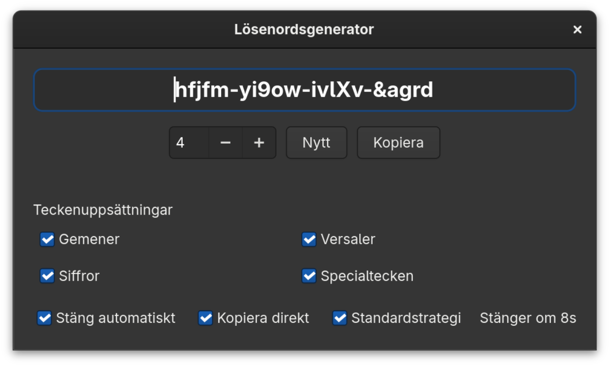
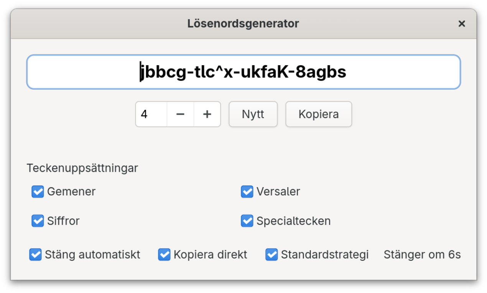

Fri programvara · GNOME · helt offline
Starkt lösenord. Bara hos dig.
Lösenordsgenerator är en inbyggd GTK4-app för GNOME. Den skapar kryptografiskt starka lösenord direkt på din dator — i grupper om fem tecken, ett klick från urklippet. Inget nätverk. Inget moln. Ingen telemetri.
hT4k#-qW9m!-Lp2xZ
Styrka
Exakt värde, bedömning och uppskattad tid för en brute force-attack — med antagandet tydligt angivet (10¹² gissningar/s, snabb hash), inte som reklam.
01 Fördelar
Ditt lösenord stannar på din dator.
Allt körs lokalt i en GTK4-app, paketerad som Flatpak. Det finns ingen server som kan lagra, tappa bort eller dela något — och inget du behöver ställa in för det.


100 % offline
Ingen nätverksåtkomst — varken i Flatpaken eller i koden. Inga konton, inget moln, ingen telemetri: det finns helt enkelt inget som kan gå förlorat, stjälas eller säljas.
Kryptografisk slump
Varje tecken kommer från operativsystemets slumptalsgenerator (OsRng) — samma källa som krypteringsprogram hämtar sina nycklar från.
Grupper om fem
abcde-FGHIJ-12345 är lättare att läsa, diktera och skriva än en teckengröt — och längden syns direkt.
Ärlig styrka
Exakt entropi, bedömning och uppskattad attacktid. Antagandet bakom (10¹² gissningar/s, snabb hash) visas — och standardstrategin anges aldrig som starkare än den är.
Ett klick, klart
Lösenordet hamnar direkt i urklippet, om du vill redan vid start, med tydlig bekräftelse. Sedan stängs fönstret av sig självt: lösenordet försvinner från skärmen men kan fortfarande klistras in.
Passar alla policyer
Gemener, versaler, siffror och specialtecken kan stängas av var för sig. Standardstrategin garanterar minst en versal, en siffra och ett specialtecken.
Åtta språk
Svenska, engelska, franska, italienska, japanska, spanska, tyska och ukrainska — gränssnittet följer systemspråket.
Smälter in i systemet
Ljust eller mörkt enligt systeminställningen. Enter skapar ett nytt lösenord, Ctrl+W stänger fönstret, Ctrl+Q avslutar — ingen mus behövs.
02 Säkerhet
Skapat lokalt, sparat ingenstans.
Generatorn är medvetet liten: GTK4 för gränssnittet, rand för slumpen, några Wayland-bibliotek för urklippet. Inga konton, inga externa anslutningar, inga bakgrundstjänster. De viktigaste egenskaperna:
a.Inget nätverk
Flatpaken begär inte --share=network, och koden innehåller ingen nätverksåtkomst. Även om den ville kunde generatorn inte skicka något.
b.Inga loggar, ingen historik
Lösenord visas aldrig i konsolen eller i systemjournalen och skrivs aldrig till disk. Bara dina inställningar sparas.
c.Kort tid på skärmen
Med ”Stäng automatiskt” avslutas appen efter 10 sekunder; ett klick i fönstret pausar nedräkningen. Lösenordet ligger kvar i urklippet tills du kopierar något annat — använder du en urklippshistorik bör du radera det där.
d.Granskningsbart
Öppen källkod under CC BY-SA 4.0: generering, entropiberäkning och styrkeuppskattning kan granskas i koden och täcks av tester.
Contact: https://github.com/danst0/passwordgenerator/security/advisories/new Expires: 2027-10-17T00:00:00.000Z Policy: https://github.com/danst0/passwordgenerator/blob/main/SECURITY.md Preferred-Languages: en, de Canonical: https://passwort.dumke.me/.well-known/security.txt
Hittat en sårbarhet? Rapportera den privat via GitHub, inte som ett offentligt ärende. Jag bekräftar normalt rapporter inom 72 timmar; detaljer publiceras när en rättning finns.
03 Installera
Ett kommando, sedan är den på plats.
Flathub
Det rekommenderade sättet på alla Linuxdistributioner: för närvarande på körtidsmiljön GNOME 50 och uppdateras automatiskt vid varje ny version.
Från källkod
Med Rust och GTK4-utvecklingsbiblioteken — för dig som vill bygga eller ändra själv.
Källkoden på GitHub